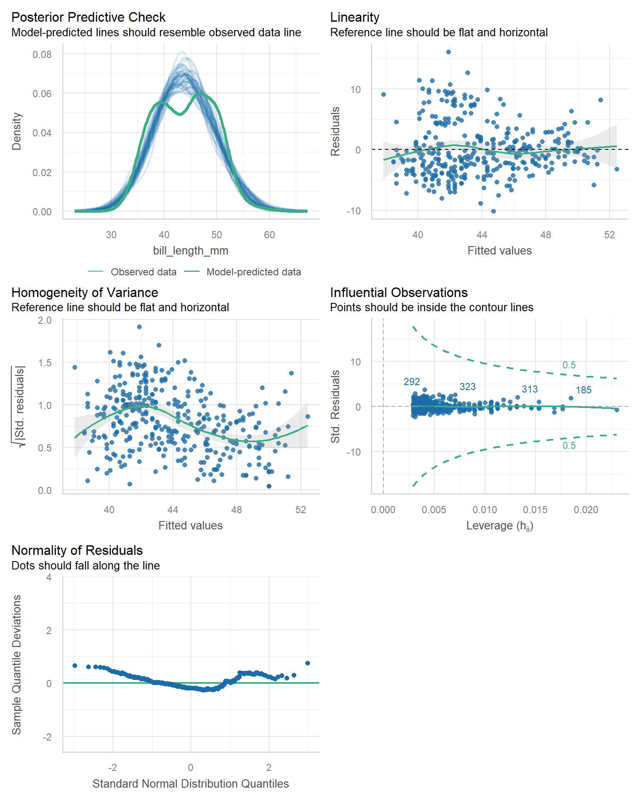

library(tidyverse)
library(gtsummary)
library(performance)
pen <- palmerpenguins::penguinsHW 08: Fitting Simple Regression models
Purpose
Practice fitting and interpreting the coefficients of a simple regression model.
Submission instructions
- No template this time! Use the structure structure of prior assignments as a guide to create your own nicely formatted report.
- Upload your rendered PDF to Canvas by the due date.
Assignment Overview
You will only fit 1 model in this assignment, but you will follow the full 6 steps that you did in the last assignment. Read each step below carefully as the details for each step have slightly changed.
- Identify variables under consideration and state which variable will be your explanatory variable and which will be your response variable.
- Think about the relationship among your variables, which one do you think could explain the other?
- Create an appropriate bivariate plot to visualize the relationship you are exploring.
- Calculate appropriate summary statistics.
- Summarize the relationship between the explanatory and outcome variables in short paragraph form.
- Write the relationship you want to examine in the form of a research question using symbols and words.
- Define the slope parameter \(\beta_{1}\) being tested.
- Translate the null and alternative hypotheses into \(H_{0}\) and \(H_{A}\) with symbols.
- Fit the simple regression model using
lm(y~x)- Write a simple sentence on whether or not there is reason to believe that a relationship between x and y exists.
- Verify assumptions & assess model fit
- Assumption of linearity can be discussed using the plot you created earlier.
- Other assumptions are checked by examining the residuals using functions in the
performancepackage - ⚠️ Make sure all your plots can be seen!
- Even if these assumptions are potentially violated, for the purposes of this assignment, acknowledge this limitation and continue with the prescribed analysis.
- Interpret ALL regression coefficients (including the intercept) in a sentence that includes a point estimate, confidence interval, and p-value. Also interpret \(R^{2}\) the coefficient of determination.
Example: Body mass and bill length of penguins
1. Identify response and explanatory variables
- The quantitative explanatory variable is body mass (g)
body_mass_g - The quantitative response variable is bill length (mm)
bill_length_mm
2. Visualize and summarise bivariate relationship
ggplot(pen, aes(x=body_mass_g, y=bill_length_mm)) +
geom_point() + geom_smooth(col = "blue")cor(pen$body_mass_g, pen$bill_length_mm, use = "pairwise.complete.obs")[1] 0.5951098There is a strong, positive, mostly linear relationship between the body mass (g) of penguins and their bill length (mm) (r=.595).
3. Write the relationship you want to examine
Let \(\beta_1\) be the true slope parameter that describes the change in bill length of the penguin as body mass increases.
- \(H_{0}: \beta_{1}=0\) There is no linear relationship between body mass and bill length.
- \(H_{A}: \beta_{1} \neq 0\) Alternate Hypothesis: There is a linear relationship between body mass and bill length.
4. Fit the regression model
Decide if there is evidence to believe that there is a relationship
pen.body.bill <- lm(bill_length_mm ~ body_mass_g, data=pen)
pen.body.bill |> summary()
Call:
lm(formula = bill_length_mm ~ body_mass_g, data = pen)
Residuals:
Min 1Q Median 3Q Max
-10.1251 -3.0434 -0.8089 2.0711 16.1109
Coefficients:
Estimate Std. Error t value Pr(>|t|)
(Intercept) 2.690e+01 1.269e+00 21.19 <2e-16 ***
body_mass_g 4.051e-03 2.967e-04 13.65 <2e-16 ***
---
Signif. codes: 0 '***' 0.001 '**' 0.01 '*' 0.05 '.' 0.1 ' ' 1
Residual standard error: 4.394 on 340 degrees of freedom
(2 observations deleted due to missingness)
Multiple R-squared: 0.3542, Adjusted R-squared: 0.3523
F-statistic: 186.4 on 1 and 340 DF, p-value: < 2.2e-16The p-value for \(b_{1}\) is <.0001, so there is sufficient evidence to believe that there is a linear relationship between body mass and bill length.
5. Verify assumptions & assess model fit
In the scatterplot, Both the outcome and predictor are continuous variables that have a visible linear relationship, and we assume the observations are independent.
check_model(pen.body.bill) |> plot()
- The distribution of the residuals is mostly normal, pretty heavy right tail. This is indicative of a nonlinear trend somewhere in the data.
- The variance of Y is not constant. This is a warning that our linear model does not fit the data well and we should look into possible refinements and improvements.
- The observed distribution of bill length is bimodal, and so the model is overestimating some values and underestimating others. There is clearly some other confounding variable that predicts bill length better than just body mass.
6. Write a conclusion in context of the problem.
coef(pen.body.bill) (Intercept) body_mass_g
26.898872424 0.004051417 confint(pen.body.bill) 2.5 % 97.5 %
(Intercept) 24.402502194 29.395242653
body_mass_g 0.003467795 0.004635038r2(pen.body.bill)# R2 for Linear Regression
R2: 0.354
adj. R2: 0.352- For a penguin who weighs 0 kg, the predicted bill length is 26.9 (24.4, 29.4)mm. This is an impossible situation.
- Each 1g increase in body mass of a penguin is associated with a significant increase of 0.004 (0.0035, 0.0046) mm of bill length (p<.0001). In more reasonable numbers, an increase of 1kg of body mass in a penguin corresponds to a 4(3.5, 4.6) mm increase in bill length.
- Body mass explains 35.4% of the variation in bill length.
However, model diagnostics indicate that a linear model may not be appropriate for this relationship. The assumption of constant variance is not upheld and there may be another variable that affects bill length.